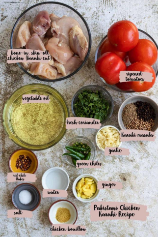

Chicken Karahi:

Ingredients:
120 ml(120 ml) oil
1 small chicken, bone in and cut into curry pieces(approx 700-800g or 1.3-1.7lb)
5 medium sized (600 g) tomatoes, very finely diced (do NOT blend or purée)
1 bulb garlic, minced approximately 2.5 tbsp
2 tablespoon ginger, minced
1-2 teaspoon salt or to taste
2 teaspoon paprika/kashmiri red chilli (essential for a red colour)
teaspoon crushed black pepper
1 teaspoon chilli flakes
0.5 teaspoon cumin powder
0.5 teaspoon coriander powder
1 teaspoon kalonji onion seed, optional
2 green chilliesslit in half lengthwise
0.5 bunch coriander chopped
¼ cup (25 g) ginger cut into matchstick pieces

Instructions:
1. Heat up your oil in a karahi dish, wok, cast iron skillet or any pan suitable for stir frying, keeping the
flame on high for the entire duration.
2. Add the chicken in. Fry this, stirring constantly until the chicken begins to take on a golden colour
in some places.
3. Add in the minced ginger and garlic. Give this a fry alongside the chicken, again stirring constantly
and ensuring nothing burns. Continue to fry this until the raw smell of the ginger and garlic begins
to fade.
4. Add all the chopped tomatoes and spices. Stir in and allow this all to cook on high, stirring to ensure
nothing catches at the bottom of the pan.
5. Continue to cook this for about 20 minutes, over a high heat. The oil will separate, the tomatoes will
thicken and begin to coat the chicken, and you will see holes begin to bubble in the gravy. The
chicken should be cooked through at this point once the oil rises to the top and you see the holes
coming through.
6. Add the coriander and green chillies, stir in, turn the heat down to a low flame and allow everything
to simmer together for 5 minutes with the lid still off.
7. Serve with the matchstick-cut ginger and additional coriander/green chilli if desired.